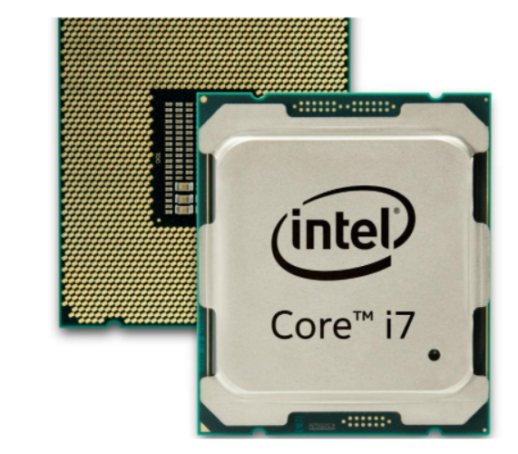
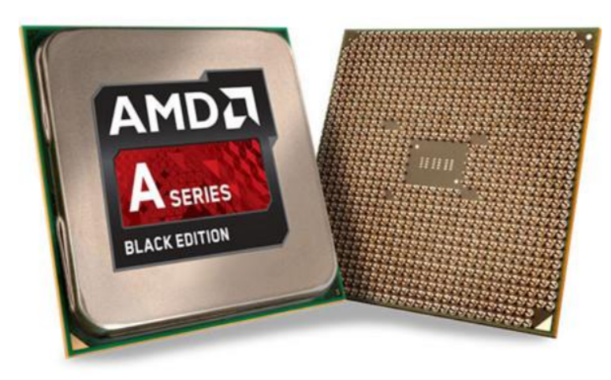
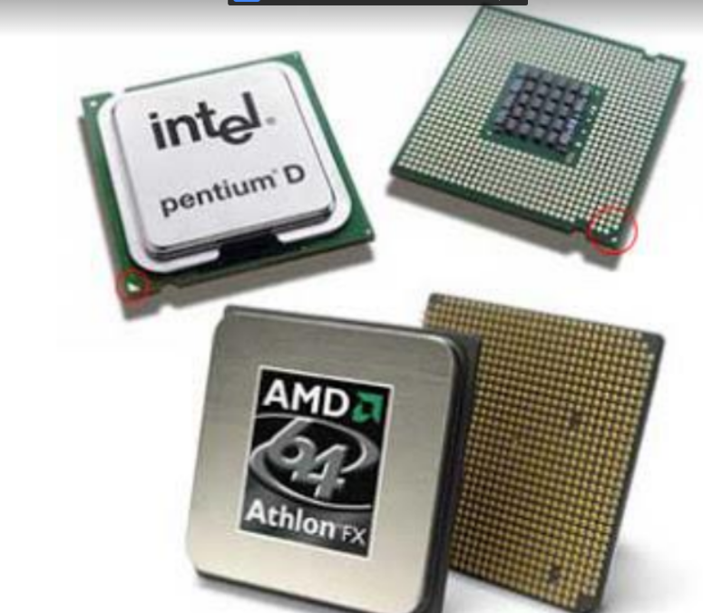

Los CPUs modernos pueden clasificarse de acuerdo a varias características, tales como: Tamaño de la Unidad Aritmética Lógica (ALU). Bus de conexión al exterior (8, 16, 32, 64 bits) Si su arquitectura tiene cauce (pipeline). Si son de arquitectura CISC o RISC. Si son Von Newmann o Harvard. Si manejan instrucciones enteras o implementan también instrucciones de punto flotante. Características. Las características más importantes a considerar al escoger un CPU en una aplicación, son: Modelo del programador (Conjunto de registros que el programador puede utilizar), forman el modelo mental del CPU que el programador utiliza al programar en ensamblador. Conjunto de instrucciones que puede ejecutar el CPU. Los modos de direccionamiento que pueden usarse para obtener los operandos de las instrucciones. Ciclo de instrucción (el conjunto de pasos que realiza el CPU para procesar cada instrucción) Buses de interconexión, usados para que el CPU lea y escriba a la memoria. Dispositivos de entrada y salida. Como podemos clasificarlos: No hace mucho tiempo, el procesador era algo totalmente desconocido por los usuarios de PCs. Esto fue cambiando con el tiempo y en la actualidad cualquier persona al comprar un equipo se pregunta acerca de los atributos elementales de este dispositivo. Es que el procesador es una parte esencial de la computadora, por eso generalmente se la conoce como su “cerebro”. Para la selección de los procesadores a utilizar en los equipos necesitamos ver las acciones tales como: Acciones Directas. Integrar un nuevo sistema de cómputo. Reemplazar un CPU dañado. Actualizar un sistema de cómputo. Acciones Indirectas. Comprar equipo de cómputo nuevo. Construir un equipo de control – Microcontrolador. En el caso de los CPU ́s de Intel ,las características y los beneficios de las tecnologías Intel® dependen de la configuración del sistema y podrían requerir hardware y software habilitados o la activación de servicios. El desempeño varía según la configuración del sistema. Ningún sistema informático puede ser absolutamente seguro. Procesadores Intel® Lo primero a definir es qué necesidades se tienen. Si la movilidad o la falta de espacio son elementos claves a considerar se optará por una computadora portátil, o laptop. Intel ofrece para estos dispositivos diferentes familias de procesadores según los requerimientos de cada usuario. Los procesadores para portátiles calificados con 5 estrellas satisfacen la máxima exigencia móvil. Si eres un gamer necesitas un equipo muy potente, los procesadores que permiten ejecutar varias aplicaciones simultáneamente, con la posibilidad de vivir los juegos con mucho realismo y excelente performance gráfica.
Publicidad Intel®. “La inteligencia artificial está cambiando nuestras expectativas de lo que pueden hacer los productos de tecnología para nosotros. Y ahora, está transformando la PC que conocemos y de la que dependemos para nuestro trabajo más importante y nuestros proyectos creativos. Intel ha integrado capacidades de IA al procesador de la PC para satisfacer la creciente demanda de aplicaciones de software modernas. Ya sea que se trate de aplicaciones existentes que se vuelven más inteligentes o de herramientas totalmente nuevas, las PCs inteligentes más recientes te ofrecen un desempeño dedicado para redes neuronales profundas que constituyen la base de las aplicaciones de IA. Los procesadores Intel® CoreTM de 11ra Generación, basados en las capacidades revolucionarias de la generación anterior, siguen forzando los límites del desempeño con una velocidad e inteligencia increíbles. También tendrás experiencias de colaboración más inmersivas, que incluyen supresión de ruido neuronal, difuminado de fondo, súper resolución de video y el códec de video más reciente, todo ello con una laptop delgada y liviana.”
Publicidad AMD. “Jerga inteligente: para entender los semiconductores Unidad de procesamiento central (CPU): circuito de control principal de una computadora que realiza operaciones aritméticas, lógicas, de control, y de entrada y salida (E/S). Chiplet: circuito integrado (CI) que contiene un subconjunto de los bloques funcionales que generalmente son necesarios para un sistema en chip (SOC) completo. Chip: pequeño bloque de material semiconductor en el que se coloca un CI funcional específico. Modelo comercial integrado: modelo comercial líder en el sector de los semiconductores que permite a las empresas destinar más ganancias para investigación y desarrollo, y estrategias de crecimiento. Unidad de procesamiento de gráficos (GPU): circuitos que realizan operaciones de grandes cantidades de datos en simultáneo para crear imágenes en una pantalla o cálculos no gráficos, como análisis de aprendizaje automático. Circuito integrado (CI): conjunto de circuitos electrónicos diseñados en un área pequeña del material semiconductor (por ej., el silicio). Nanómetro (nm): unidad de medida (la mil millonésima parte de un metro); se utiliza para definir el tamaño de elemento mínimo de una tecnología de procesos Fabricante de equipos originales (OEM): empresa que monta o produce dispositivos de usuario final terminados que están destinados a la promoción o la venta, ya sea propia o a través de terceros. Paquete: carcasa de metal, plástico, cristal o cerámica que contiene uno o más CI independientes. Tecnología de procesos: las normas de diseño y el proceso de producción específicos de un semiconductor; también llamada nodo de tecnología, nodo de proceso o simplemente nodo. Sistema en chip (SOC): CI que combina muchos componentes de una computadora u otro sistema electrónico en un mismo chip. Transistor: componente que regula el flujo de corriente eléctrica y funciona como componente fundamental de los CI. Oblea: lámina fina de silicio que se utiliza para fabricar varios CI. Un solo teléfono inteligente de hoy tiene mucha más potencia de procesamiento que las computadoras que utilizó la NASA en 1969 para llevar el Apollo 11 a la luna.5 AMD es la primera empresa en lanzar CPU y GPU x86 de 7·nm en el mercado. Estos dispositivos ya se utilizan en los centros de datos y productos para consumidores (por ej., computadoras portátiles y de escritorio) de hoy.
Con los tiempos de ejecución extremadamente extensos que requieren las nuevas tecnologías de procesos, los ingenieros de AMD ya están trabajando en innovaciones que quizás, algún día, permitan crear CI con procesos de 5·nm y 3·nm. Otro enfoque clave para mejorar el rendimiento de los procesadores es la implementación de un diseño particionado de varios chips, que permite que una empresa de semiconductores interconecte muchas placas de núcleos más pequeñas y compactas para fabricar una CPU con muchos más núcleos. Por ejemplo, la segunda generación de los procesadores para servidores AMD EPYCTM divide un chip para servidores de 32 núcleos con arquitectura monolítica en ocho “chiplets” independientes de 7·nm que van combinados en un módulo de varios chips y se conectan mediante señales de alta velocidad. La fabricación de este procesador EPYCTM como un único chip no habría sido posible con las limitaciones (límite de retícula) del equipo de fabricación. El diseño también puede llegar a mejorar el rendimiento de productos aceptables en producción. AMD estima que la técnica de varios chips reduce los costos de producción en aproximadamente un 40·%. El poder y la libertad para llegar más lejos Ya sea para agilizar el descubrimiento de fármacos o realizar una compra en línea, los procesadores de semiconductores permiten tomar una amplia variedad de decisiones basadas en datos. A lo largo de más de 50 años, AMD ha innovado constantemente en la computación de alto rendimiento, los gráficos y las tecnologías de visualización.”
